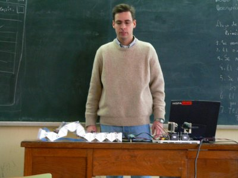
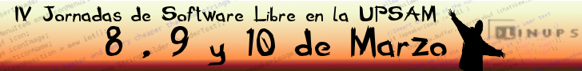
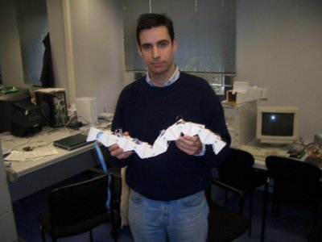
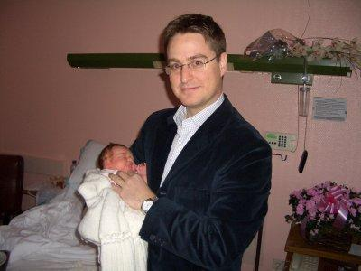
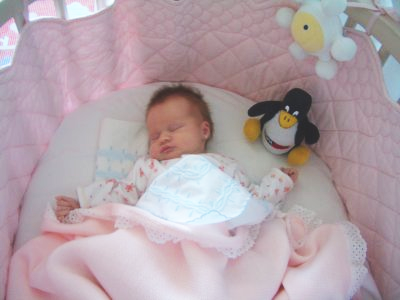
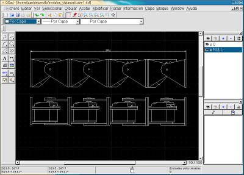
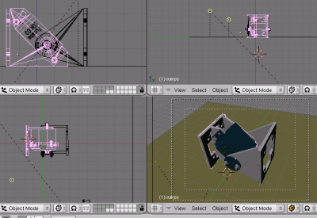
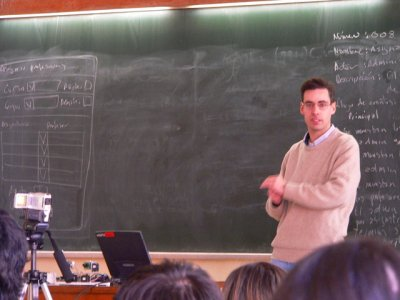
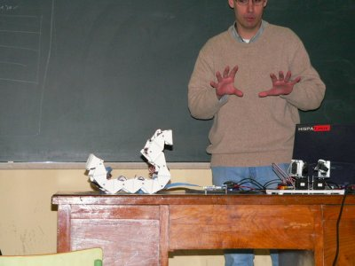
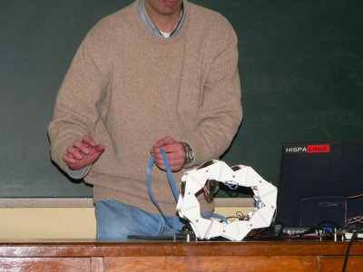

|
“Robótica y Linux: Cómo se hizo Cube Revolutions”. IV Jornadas software Libre UPSAM. Marzo-2005 |
|
 |
|
 |
Título: “Robótica y Linux: Cómo se hizo Cube Revolutions”
Organiza: LINUPS, grupo de usuarios de GNU/Linux de la UPSAM
Lugar: Universidad Pontificia de Salamanca en Madrid, UPSAM.
Fecha: 10 de Marzo de 2005
Ponentes:
Esta conferencia se centra en las herramientas software empleadas en el diseño del robot ápodo Cube Revolutions. Todo el robot ha sido desarrollado en un entorno Linux y casi todas las aplicaciones utilizadas son libres. Está constituido por la unión en cadena de 8 módulos Y1, que han sido diseñados utilizando la herramienta libre QCAD (dibujo en 2D). A partir de las piezas 2D y utilizando la aplicación Blender se crearon los modelos 3D de los Módulos y con ellos el modelo 3D del Robot. La electrónica original es la tarjeta CT6811, que es hardware libre. Sin embargo, se está migrando a la tarjeta Skypic, basada en el microcontrolador pic16f876 y que también es hardware libre. Esta placa se ha diseñado utilizando la herramienta no libre Eagle. En aquel momento era la única opción para diseño de circuitos desde Linux. No obstante, hace poco se ha liberado la primera versión de KICAD, un entorno totalmente libre y profesional para diseño de circuitos, que se empleará para las futuras placas. Todo el software para la locomoción de Cube Revolutions es libre, programado en C y C# (Plataforma Mono), utilizándose las librerías gráficas GTK y GTK#.
|
Descarga de la presentación |
|
upsam-robotica-linux-cube.sxi (4,7 MB) |
Presentación para OpenOffice 1.1.3 |
|
upsam-robotica-linux-cube.pdf (2,1MB) |
Presentación en PDF |
Se condecen permisos para usar, modificar y/o distribuir esta presentación, siempre que se mantenga esta nota.
Robot Cube Revolutions
Tarjeta Skypic, entrenadora para microcontroladores PIC de 28 pines.
Robot ápodo Cube Reloaded (Versión anterior a Cube Revolutions)
Programa star-servos8 para el control de 8 servos desde el PC
Aplicación libre QCAD, para diseño en 2D. Disponible en Debian (apt-get install qcad)
Aplicación libre Blender, para diseño en 3D. Disponible en Debian (apt-get install blender)
Aplicación libre KICAD, para diseño de circuitos electrónicos.
Programa Eagle para diseño de circuitos electrónicos. No libre. Disponible en el repositorio non-free de Debian
Plataforma de desarrollo software Mono (.NET para Linux)
Librerías gráficas GTK
Librerías gráficas GTK#
La charla de “Robótica y Linux” es de carácter divulgativo, en la que Andrés Prieto-Moreno y yo (Juan González) hacemos demostraciones de diferentes robots y cómo los controlamos desde máquinas Linux. Sin embargo, esta vez Andrés no pudo asistir porque acababa de ser padre. Su hija, aunque recién nacida, ya se está familiarizando con el software libre:
|
 |
 |
La charla se cambió por la actual: “Robótica y Linux: Cómo se hizo Cube Revolutions”. En vez hacer una demo de todos los robots, mostré el software libre empleado en el diseño y control de Cube Revolutions. Las piezas se diseñaron con el programa QCAD (foto de la izquierda) y los modelos 3D con Blender (foto de la derecha)
|
 |
 |
Como siempre, en estas charlas hago muchas demostraciones. A la gente le gusta ver cosas moverse, más que escuchar un rollo teórico :-). En la foto de la derecha se ve a Cube Revolutions en posición de “cobra”.
|
 |
 |
En la foto de la izquierda Cube Revolutions está enrollado sobre sí mismo. El año pasado, en las III jornadas de software libre en la UPSAM me comentaron que tenía la forma de la “Espiral de Debian” :-). En la foto de la derecha el robot se está moviendo de manera similar a cómo lo hacen los gusanos de seda: utilizando semiondas.
|
|
 |
En esta foto Cube Revolutions se está desplazando como si fuese una rueda
|
 |
Al grupo LINUPS por invitarme un año más a las jornadas. ¡Muchas gracias!
A Pablo Arroyo (Zioma) por las fotos. Gracias :-)
1/Enero/2005: Añadido enlace a Cube Revolutions
20/Abril/2005: Añadidas más fotos de las demos de Cube Revolutions
19/Abril/2005: Publicada información en esta web